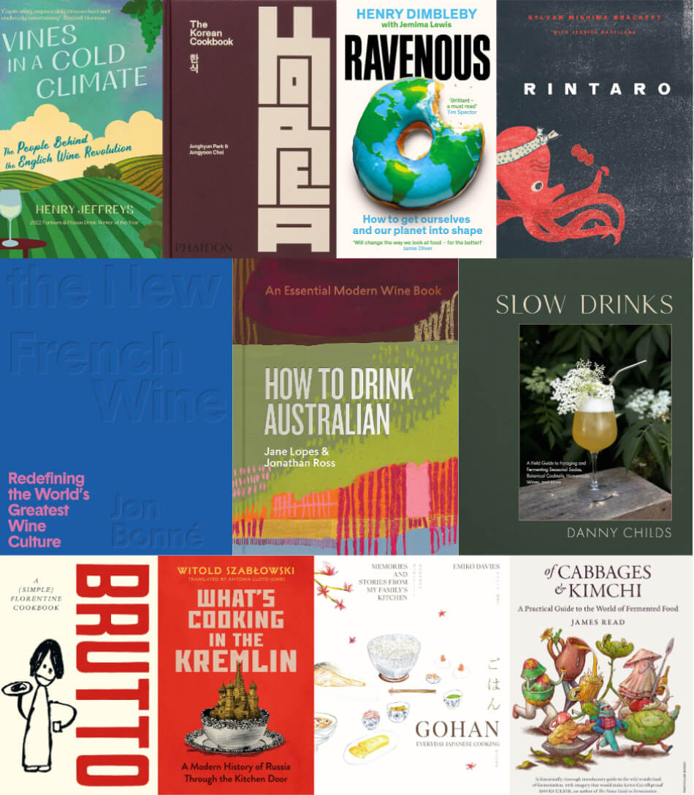

André Simon Awards 2023 Shortlist Announced
We're very excited to announce the shortlist for the André Simon Food and Drink Book Awards 2023, on the 45th year of the prestigious awards. Winners will be announced at an awards ceremony in London on April 29, 2024.
The shortlist comprises seven food and four drink books: from everyday Japanese home cooking to a bold manifesto for revolutionising our food system; from looking at how to ferment kimchi at home to a modern history of Russia through the kitchen door. In the drinks category, the spotlight is turned on the evolving Australian wine scene, the craft of foraging and fermenting, and the people behind the English wine revolution.
Each year, the André Simon trustees are guided by two independent assessors. Asma Khan is this year's food assessor, one of the UK's most prominent female chefs and the founder of the acclaimed Darjeeling Express, run by an all-female kitchen team.
"A lot of blood, sweat and tears goes into producing a cookbook and even though we had to pick just a few for the shortlist, every book submitted to the awards is a winner. It was an honour to read them." - Asma Khan, food assessor
Award-winning author Dave Broom is this year's Drink Assessor. Dave was a recipient of the André Simon John Avery Award for his book The Way of Whisky in 2018. His latest book A Sense of Place was named one of the Top Six Drinks Books of 2022 by The New York Times.
"As a writer, I appreciate the effort that goes into writing and producing a book. My congratulations to all who entered. It was a joy to read your words." - Dave Broom, drink assessor
